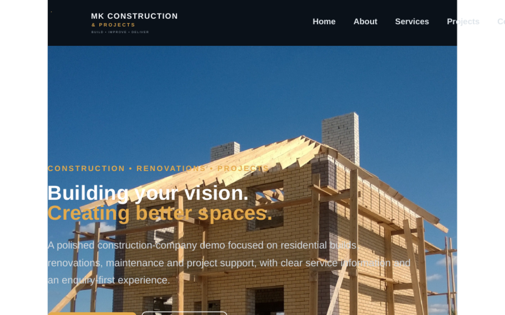
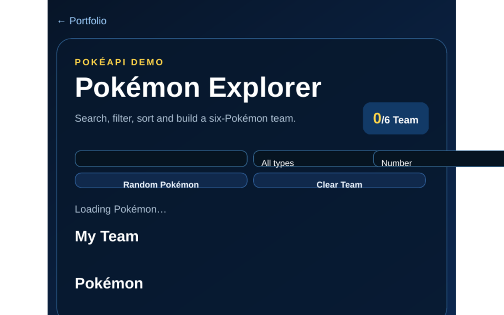
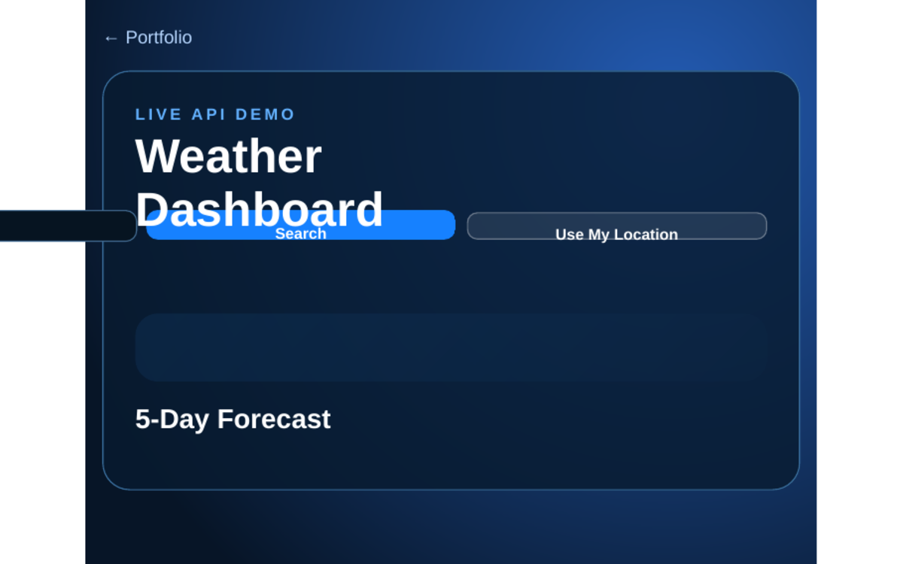
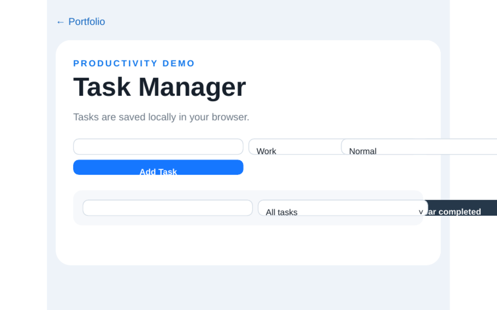
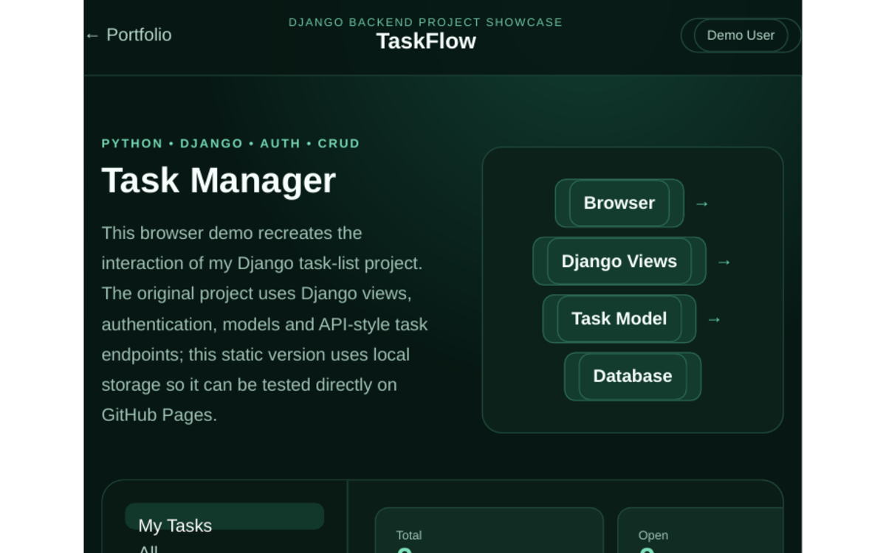
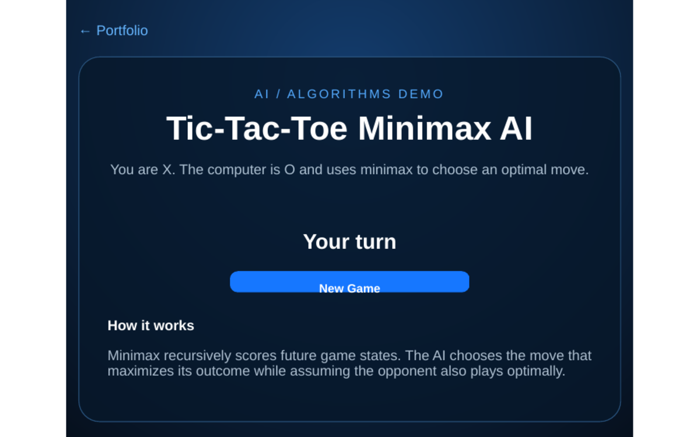

Interfaces & Responsive Web
HTML5CSS3JavaScriptReactTailwind CSSBootstrapResponsive Design
Junior Software Developer • Full-Stack Web Developer • IT Support
I build practical web applications from interface to backend — responsive front ends, Python/Flask logic, APIs, SQL databases and administrative tools — backed by hands-on IT support and troubleshooting experience.
Projects built to work across screen sizes.
I am building practical experience across both front-end and back-end development, using Python, Flask, Django, JavaScript, HTML, CSS, SQL, SQLite, APIs and database-driven applications. I enjoy taking projects beyond the interface by building the logic, data handling and administrative systems that power them behind the scenes.
My project work includes responsive websites, Python/Flask web applications, Django coursework, REST API integrations, database systems, admin dashboards, customer and quotation workflows, authentication concepts and interactive applications. Alongside development, I have hands-on IT experience with Windows systems, networking, hardware/software troubleshooting and technical support.
I enjoy solving technical problems, learning new technologies and improving projects until they are reliable, responsive and easy to use. The demos below are selected to show both visual development and the logic behind real applications.
My skills cover the interface, server-side logic, data layer, integrations, development workflow and practical technical support.
Projects that demonstrate more than page design — including data, logic, integrations and practical business workflows.
Responsive interfaces connected to backend logic, databases and real application workflows.
Python, Flask and Django functionality for authentication, business rules, dashboards and administration.
SQL, SQLite and ORM-based systems for structured data storage, filtering and CRUD operations.
Applications that retrieve, validate, process and present information from external REST APIs.
Interfaces for managing users, customers, quotations, statuses, reports and operational information.
Windows, devices, software, networking basics, installation, troubleshooting and practical fault finding.
Start with the featured work, then filter the full project set by full-stack, backend, frontend, API or AI/algorithms.
Full-stack private business system
Backend • Flask • SQLAlchemy • SecurityResponsive construction business website
Frontend • Responsive • Business WebsiteSafe interactive backend showcase
Python • Flask • Database Workflows
PROJECT SCREENSHOTUpgraded construction company demo with dedicated branding, locally bundled project photography, service presentation, responsive navigation, gallery and enquiry interaction.

PROJECT SCREENSHOTPokéAPI-powered explorer with search, type filtering, sorting, random discovery and a persistent six-Pokémon team.

PROJECT SCREENSHOTOpen-Meteo weather application with city search, device location support, current conditions and a five-day forecast without an API key.

PROJECT SCREENSHOTTask manager with categories, priorities, due dates, search, filtering, completion tracking and persistent browser storage.
 PROJECT SCREENSHOT
PROJECT SCREENSHOTInteractive showcase based on a Flask/SQLAlchemy admin system for quotations, customer records, statuses, dashboards and operational workflows.

PROJECT SCREENSHOTInteractive browser showcase adapted from my Django task-list project, demonstrating authenticated task workflows, API-style CRUD and filtering concepts.

PROJECT SCREENSHOTPlayable browser adaptation of my CS50 AI work. The opponent uses minimax to evaluate future board states and choose optimal moves.
Additional repository work includes CS50 AI and Django projects that demonstrate reasoning, algorithms and backend fundamentals.
Knowledge-based inference and logical deduction for identifying safe cells and mines.
Sampling and iterative algorithms for estimating page importance in a linked corpus.
Constraint satisfaction using node/arc consistency and backtracking search.
Coursework covering models, views, templates, authentication, APIs and data-driven web workflows.
I label unfinished work clearly so employers can distinguish production-ready demos from projects I am actively exploring and improving.
A native Android-focused system project exploring custom interface design, assistant workflows, device controls and local AI integration. Current work includes Gradle/Android build configuration and native app architecture.
A full-stack business website and administration system that I am completing for MazeTech Hub. The main build is complete and I am currently focused on final testing, security hardening, deployment checks and interface polish.
Private project — source code and protected administration features are not publicly exposed.
View Safe Project Showcase →Hands-on IT work and software projects have helped me develop practical troubleshooting, development, data-handling and technical problem-solving skills.
Assisted with CCTV, access control, intercoms, camera installation, cabling, basic networking, Windows support, device setup, fault finding and general technical troubleshooting.
Built responsive interfaces, JavaScript applications, REST API integrations, Python/Flask systems, Django coursework, SQL/database workflows and AI/algorithm projects.
Comfortable capturing, organizing and checking digital information using structured forms, spreadsheets and database-backed systems, with attention to accuracy and consistency.
Genuine UniCollege short-programme certificates and supporting education documents.
Programming foundations, logic, events, conditions and computational thinking.
View Certificate →Computer science fundamentals and structured problem solving.
View Certificate →Python programming foundations and practical problem solving.
View Certificate →Artificial intelligence concepts and Python-based problem solving.
View Certificate →Focused study in programming, software development, web technologies, databases, computational thinking and artificial intelligence.
Completed coursework covering Python, JavaScript, C, SQL, HTML/CSS, software development, databases, computational thinking, AI and robotics.
Programming using Scratch, Computer Science, Programming using Python and Artificial Intelligence with Python.
Completed Grade 12 with continued focus on building a practical technology career.
If you are hiring for junior software development, full-stack/web development, IT support, internship or trainee roles, you can contact me directly or review my CV.